Nos services



L'Histoire du château
Un témoignage des siècles passés
Perché sur les hauteurs de la Loire, le Château de Saint-Victor-sur-Loire a traversé les âges, se dressant comme un témoin privilégié de l’histoire de la région. Son architecture et ses murs portent les traces de nombreux remaniements, reflets des périodes médiévales et modernes qui ont marqué son développement.

Les origine et la construction du château
Les premières mentions du château de Saint-Victor-sur-Loire remontent au XIIᵉ siècle. Il fut édifié à l’origine pour défendre la vallée de la Loire et contrôler le passage sur cet axe stratégique de la région. La forteresse, construite en pierre massive, se composait à l'époque d'un donjon principal entouré de remparts imposants. Ses premières structures ont été conçues pour résister aux conflits féodaux qui agitaient la région.
Le château a longtemps servi de bastion défensif pour les seigneurs de Saint-Victor, qui contrôlaient les alentours et protégeaient les populations locales. Son emplacement dominant permettait d’anticiper les éventuelles attaques venant des vallées environnantes, en faisant un point d'observation stratégique et un refuge en temps de guerre.